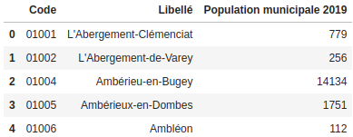
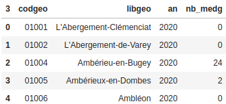
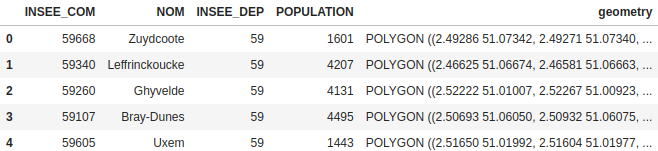
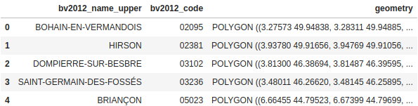
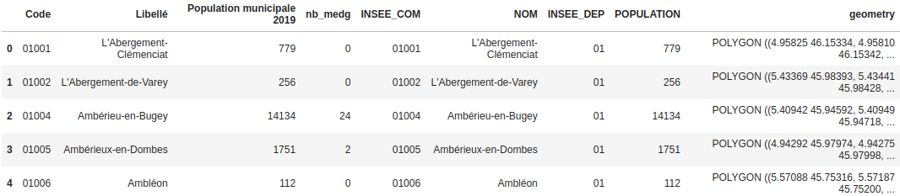
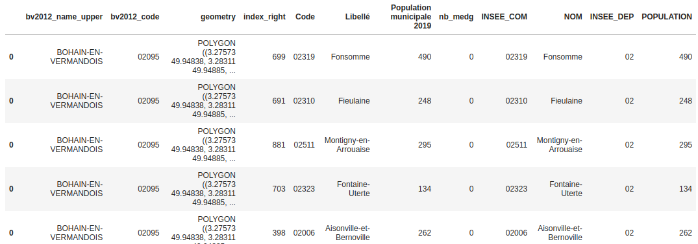
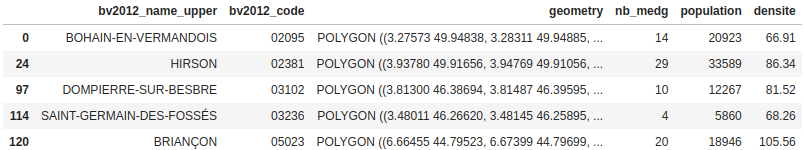
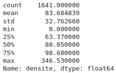

Cartographie de la densité de médecins généralistes par bassin de vie
Compétences mises en œuvre
- Nettoyage de données
- Manipulation de données
- Jointures de tables (classiques et spatiales)
- Visualisation de données (carte choroplèthe)
Problématique
L'idée de ce projet était d'établir en Python une carte choroplèthe indiquant la densité de médecins généralistes par bassin de vie en France métropolitaine. Cette page est un résumé du travail effectué. Le notebook contenant l'ensemble du code se trouve ici.
Données utilisées
- un fichier .xlsx regroupant le nombre de médecins généralistes par commune (source : Observatoire des territoires / année 2020)
- un fichier .csv contenant la population de chaque commune au recensement de 2019 (source : INSEE)
- un fichier .geojson regroupant les bassins de vie ainsi que leurs contours géographiques (source : INSEE)
- un fichier .geojson des différentes communes françaises avec leurs données géographiques (source : https://github.com/gregoiredavid/france-geojson )
On peut voir que les données sur la population et le nombre de médecins ne sont pas de la même année. Mais à une année près, il y a peu de chances qu'il y ait eu une forte variation de ces données. De même en 2022 la population et le nombre de médecins des communes a sans-doute un peu changé mais le résultat obtenu pour l'année 2020 donne une bonne idée de la densité de médecins par bassin de vie aujourd'hui en 2022.
Modules utilisés
Comme dit aupravant, j'ai utilisé le langage Python pour réaliser cette carte. Voici les modules que j'ai utilisés :
- le module pandas pour lire les fichiers csv et xlsx, convertir les données en dataframes et faire des jointures de ces dataframes
- le module geopandas pour lire les fichiers geojson, convertir les données en GeoDataFrames ainsi que pour faire des jointures spatiales
- le module matplotlib pour la création de la carte
Nettoyage des données
La première opération a été de nettoyer les données. Je ne présenterai pas le code correspondant à cette partie ici (se référer au notebook). Voici ce que j'ai pu observer et faire :
- Il n'y avait pas de données manquantes dans les fichiers. Je n'ai rien eu à faire de ce côté.
- Il n'y avait pas de données en doublons.
- Il n'y avait pas de données abbérantes.
- En revanche, la population de chaque commune était au format str. J'ai donc converti cette variable au format int.
- Le nombre de communes n'était pas le même dans chaque fichier. Après inspection, je me suis rendu compte que certains fichiers ne contenaient que les données de France métropolitaine alors que d'autres contenaient aussi des données de communes d'outre-mer. De plus, dans le fichier sur les contours géographiques des communes, les communes de Paris, Lyon et Marseille étaient divisées selon leurs arrondissements. Il a donc fallu faire en sorte qu'il n'y ait plus qu'une ligne pour chacune de ces villes. Dans le cas contraire, cela aurait posé problème lors des jointures avec les autres tables.
- J'ai enfin supprimé des colonnes dont je n'avais pas besoin dans les dataframes.
Jointure des tables
Arrivé à ce stade, les données utiles se trouvent dans quatre dataframes différents :
- pop_com présentant la population des communes

- medecins présentant le nombre de médecins par commune

- communes regroupant les contours géographiques des communes

- bassins regroupant les contours géographiques des bassins de vie

J'ai commencé par faire une jointure entre pop_com et medecins. J'ai appelé la dataframe obtenue med_pop_com.
med_pop_com = pop_com.merge(medecins, how='left', left_on='Code', right_on='codgeo')
med_pop_com.head()
Ensuite, je n'ai gardé que les colonnes utiles et j'ai fait une jointure avec communes. La dataframe obtenue (med_pop_geo_com) regroupe donc toutes les données sur les communes (population, nombre de médecins et contours géographiques).
med_pop_com = med_pop_com[['Code', 'Libellé', 'Population municipale 2019', 'nb_medg']]
med_pop_geo_com = med_pop_com.merge(communes, how='inner', left_on='Code', right_on='INSEE_COM')
med_pop_geo_com.head()

Il restait alors à faire la jointure avec les données sur les bassins de vie. Le problème était que je ne disposais pas de colonnes communes dans les deux tables med_pop_geo_com et bassins. J'ai contourné le problème en faisant une jointure spatiale.
Pour faire cette jointure spatiale, j'ai décidé de calculer les coordonnées du centre géographique de chaque commune. Puis j'ai fait une jointure en sélectionnant pour chaque bassin de vie les communes dont le centre se situe dans le bassin. J'ai utilisé le paramètre contains de la méthode sjoin du module geopandas. J'ai appelé la dataframe finale df_total.
# Calcul du centroid de chaque commune / utilisation d'un crs avec coordonnées en metres pour calcul du centroid
med_pop_geo_com = gpd.GeoDataFrame(med_pop_geo_com).to_crs(crs=3857)
#Création des centres de chaque commune
med_pop_geo_com['centre']=med_pop_geo_com.geometry.centroid
#suppression de la colonne geometry
med_pop_geo_com = med_pop_geo_com.drop('geometry', axis=1)
#Renommer la colonne centre avec le nom geometry (pour la jointure avec sjoin)
med_pop_geo_com.rename(columns={'centre':'geometry'}, inplace=True)
#retour à un crs en degrés
med_pop_geo_com = med_pop_geo_com.to_crs(crs=4326)
med_pop_geo_com.head()

Calcul des densités
Pour faire le calcul de densité de médecins par bassin de vie, il faut connaître la population totale de chaque bassin ainsi que son nombre de médecins. Puis il n'y a plus qu'à faire le quotient de ces quantités et multiplier par 100 000 pour obtenir le nombre de médecins pour 100 000 habitants.
Enfin, il suffit de faire une nouvelle jointure entre la nouvelle dataframe obtenue et df_total.
# Population et nombre de médecins par bassin
df_par_bassin = df_total.groupby(by='bv2012_code').agg({'nb_medg':'sum', 'Population municipale 2019':'sum'})
# Densité de médecins (nb pour 100 000 hbts)
df_par_bassin['densite']=round(df_par_bassin['nb_medg']/df_par_bassin['Population municipale 2019']*100000,2)
# Sélection des colones de df_total qui serviront par la suite
df_total = df_total[['bv2012_name_upper', 'bv2012_code', 'geometry']]
df_par_bassin.rename(columns={'Population municipale 2019':'population'}, inplace=True)
# jointure finale (avec suppression des doublons dus à la jointure)
df_final = df_total.merge(df_par_bassin, on='bv2012_code', how='inner')
df_final = df_final.drop_duplicates()
df_final.head()

Création de la carte
Avant de créer la carte, on peut observer les principaux paramètres statistiques de la densité de médecins.
df_final['densite'].describe()

Remarque
On peut remarquer qu'il existe des bassins à densité nulle. Après exploration des données, on trouve qu'il s'agit des bassins de l'Île d'Yeu et de Arzacq-Arraziguet. Après une recherche sur internet, il semble exister une maison médicale dans ces bassins mais qui n'a sans-doute pas été comptabilisée comme médecin généraliste dans les données de l'Observatoire des territoires.
On peut ensuite faire une carte choroplèthe de ces densités de médecins. Pour cela, j'ai regroupé les bassins de vie par classe. La délimitation des classes s'est faite par quartiles. Puis j'ai utilisé les modules geopandas et matplotlib pour créer la carte.
import matplotlib.pyplot as plt
# Création des classes
df_final['classe'] = pd.qcut(df_final['densite'], 4, ['0 - 63,7', '63,7 - 80', '80 - 98,7', '+98,7'])
# Création d'une dataframe avec les coordonnées de villes à faire apparaître sur la carte
liste_villes=[{'ville':'Paris', 'lat':48.85341, 'long':2.3488},
{'ville':'Marseille', 'lat':43.299999, 'long':5.4},
{'ville':'Lyon', 'lat':45.7640430, 'long':4.8356590},
{'ville':'Toulouse', 'lat':43.6046520, 'long':1.4442090},
{'ville':'Bordeaux', 'lat':44.8377890, 'long':-0.5791800},
{'ville':'Nantes', 'lat':47.2183710, 'long':-1.5536210},
{'ville':'Lille', 'lat':50.6292500, 'long':3.0572560},
{'ville':'Strasbourg', 'lat':48.5734053, 'long':7.7521113},
{'ville':'Brest', 'lat':48.3903940, 'long':-4.4860760},
{'ville':'Orléans', 'lat':47.90289, 'long': 1.9038900},
{'ville':'Poitiers', 'lat':46.58333, 'long': 0.33333},
{'ville':'Caen', 'lat':49.18585, 'long': -0.35912},
{'ville':'Ajaccio', 'lat':41.92723, 'long': 8.73462}]
df_villes=pd.DataFrame(liste_villes)
#Transformation de la dataframe des villes en geodataframe
gdf_villes = gpd.GeoDataFrame(df_villes, geometry=gpd.points_from_xy(df_villes.long, df_villes.lat))
#création de la figure
fig, ax = plt.subplots(1,1, figsize=(15,15))
#Suppression des axes
ax.get_xaxis().set_visible(False)
ax.get_yaxis().set_visible(False)
#legende
leg_kwds = {'title' : 'Nombre de médecins pour 100 000 hbts', 'loc':'lower left', 'fontsize':11, 'title_fontsize':11}
#création de la carte
df_final.plot(ax=ax, column='classe', cmap='OrRd',alpha=0.8, edgecolor='black', linewidth=0.1, legend=True, legend_kwds=leg_kwds)
#titre et notes
plt.title("Densité de médecins généralistes par bassin de vie", fontsize=17)
plt.figtext(0.53, 0.06,
"Données sur la population française : INSEE (recensement 2019) \n Données sur les médecins : Observatoire des territoires (année 2020) \n Données géographiques des bassins de vie : INSEE",
style='italic', ha="center", fontsize=11, bbox={"facecolor":"white", "edgecolor":"white","alpha":0.5, "pad":5})
# Placement des points
ax.scatter(df_villes.long,df_villes.lat,c='black')
# Placement des noms de villes
bbox=dict(boxstyle="round", alpha=0.8, color='white')
for _,row in df_villes.iterrows():
ax.text(row['long']+0.13,row['lat']+0.13,row['ville'],fontsize='large', bbox=bbox)
#Affichage
plt.show()